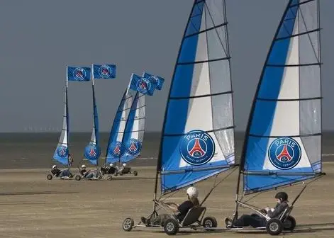

La nouvelle vient de tomber et personne ne s'attendais à ça !
Du nouveau dans l'affaire de la conférence de presse du PSG, la société qui gère les deplacements de l'équipe, vient de s'équiper d'une flotte de 32 chars à voile.
un dispositif impressionnant
En effet, jamais dans l'histoire du football, ce type de véhicule n'avait été mobilisé.
Nous avons reccueilli pour vous, les propos de MR Baltier, entraîneur.
" Je suis très fier et heureux, de pouvoir mettre en avant
notre combat pour l'écologie, grâce au club "
- Christophe Baltier, entraîneur et militant VerDeGris
Mais aussi ceux du numéro 7 au PSG et 10 en équipe de france
" c'est un rêve qui se réalise,
personne ne le savait, mais je suis 3ème Dan de
char à voile "
- William Baladé, attaquant et champion de Mario Kart